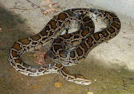
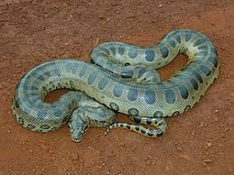

Tên thường gọi: Trăn xanh Nam Mỹ
Tên khoa học: Eunectes murinus
Loại:Động vật bò sát
Chế độ ăn:Động vật ăn thịt
Tuổi thọ: Khoảng 10 năm
Trọng lượng: Tối đa khoảng 250 kg
Tình trạng trong Sách Đỏ: Không được xếp hạng
Trăn xanh Nam Mỹ là động vật thuộc Bộ Có Vảy, nằm trong Phân Bộ Rắn và Họ Trăn trong phân loại khoa học. Trăn Nam Mỹ còn được biết tới như một trong hai loài Rắn có kích thước khổng lồ nhất còn sống tới thời điểm hiện tại. Chúng có kích thước trung bình khoảng 5 mét (với cá thể cái) và 3 mét (với cá thể đực). Mặc dù ngắn hơn so với Trăn Gấm nhưng chúng lại sở hữu sức mạnh đáng nể cùng với trọng lượng siêu khủng.
Do sống trong môi trường nước nên thức ăn của Trăn xanh Nam Mỹ cũng rất đa dạng, chúng có thể ăn cá, động vật có vú cỡ lớn (chuột lang, nai, heo vòi…), đôi khi là chim hoặc cả những loài bò sát khác (Cá sấu). Việc di chuyển khi phần đầu vẫn nhấp nhô trên mặt nước giúp Trăn định vị con mồi và xử lý chúng chuẩn xác hơn. Qua các nghiên cứu của nhà động vật học, Trăn xanh Nam Mỹ có trường hợp còn tấn công con người và cả đồng loại (thường cá thể đực lớn sẽ tấn công và ăn thịt con nhỏ hơn và cá thể cái ăn thịt con đực sau khi giao phối..).